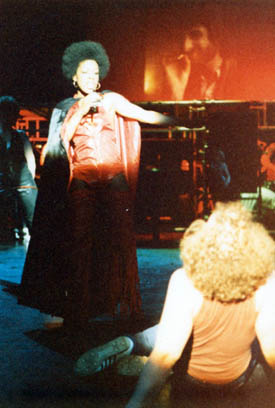
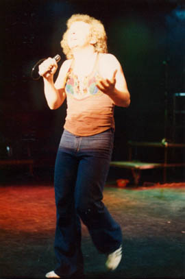

Chapter 9. Tommy at the Oldham Grange Arts Centre
With the comedy review over our focus returned to the more ambitious project of putting Tommy on the amateur stage, rehearsals beginning at the end of March 1978 at the Star and Garter, Fairfield Street. Already we were a little panicked because the show was so complicated it would have been very easy to make a complete mess of it, by not being prepared in any way for its multiple complexities. My scrapbook makes the comment that the first few rehearsals were haphazard.
 We had a dilemma as to exactly what to produce, for there was the Who original double LP, the film soundtrack (which was very different in many places) and the cast of thousands version done with all the current rock stars (again somewhat different). It quickly dawned on us that no one version was the one to go for, and that to a certain extent we would have to do a fair bit of mixing and matching to achieve the definitive version. So we largely used the film version - which generally had more music in - but added one or two tracks missing from it, e.g. The Underture, an effective instrumental from the original Who album.
My initial notes express reservations about the effectiveness of the people singing Pinball Wizard and the Acid Queen. The film performances were extremely memorable; Elton John's powerful Pinball Wizard and Tina Turner's throaty Acid Queen were hard acts to follow. Would our singers be able to fill their shoes? I need not have worried as they quickly improved. From the start of May we were entrenched in three rehearsals a week (Tuesdays, Thursdays and Sundays) right the way through until the show, which ran from May 31st to June 3rd 1978. This was a vast amount of rehearsals, although as we found out, it was a show that really needed to be that fully prepared.
The local papers were all over us again, especially as it was such an important show for us. Nothing in this show was to be spared. If props were needed then we had to get them. No substitutes would do. For example the Grange Arts sent us a note detailing their willingness for us to use 'a Donkey, providing it was at all times accompanied by an experienced attendant', and two motorcycles 'providing the operation of the motor cycles will be in strict accordance with safety precautions'.
And so to the performances!
 The band for the show was myself on keyboards (Yamaha CS60 Polysynth, Hohner Clavinet, Arp Pro - Soloist) plus old friends, Chas on Guitar, Paul Morell on Rhythm Guitar, Alan Ratcliff on Percussion and the return of Neil on Drums and Mike on Bass.
The cast were Nicky Baird as Tommy, Louis Grant and John Rolt as the Prologue Singers, Alison Davis as Tommy's Mum Nora, Mary Clark and Michelle Fenton as Nurses, Jason Ward as Young Tommy, Allan Taylor as Frank, Garyk Barnett as Group Captain Walker, Louis Grant as the Preacher, John Wild as Cousin Kevin, Chris Hawley as Uncle Ernie, Juliette Braithwaite as the Acid Queen, Steve Hodgkinson as the Champ, John Rolt as the Specialist, Edwina Millington as Sally Simpson, and Gordon Rowe and Stella Fogg as Reverend and Mrs Simpson.
No less than a further 27 people played numerous other small parts and danced and did too many other things miscellaneous to mention here.
So it really was a huge cast, and in the end it went really well! Our audiences were very good and we made more money than we had ever done. We got the best critiques ever, generally the best reception from audiences, and it was the most ambitious show to pull off as well. The band all worked like slaves, played fantastically and everyone acted, sang and danced their hearts out.
It was this show that finally enhanced our reputation as a serious theatre company. A taped cassette recording does exist of one of the performances but was marred slightly by Alison's radio mike giving out every so often, resulting in no apparent vocal being recorded.
The show ended up only being the North West amateur premiere as the cast down south beat us to the punch by a couple of weeks! Rats! However an interview with Pete Townsend in Melody Maker does refer to Genesis Theatre by name so we did have a modicum of recognition.
Anyway, never mind, now the next stop was the big one: Tommy at the Royal Exchange!